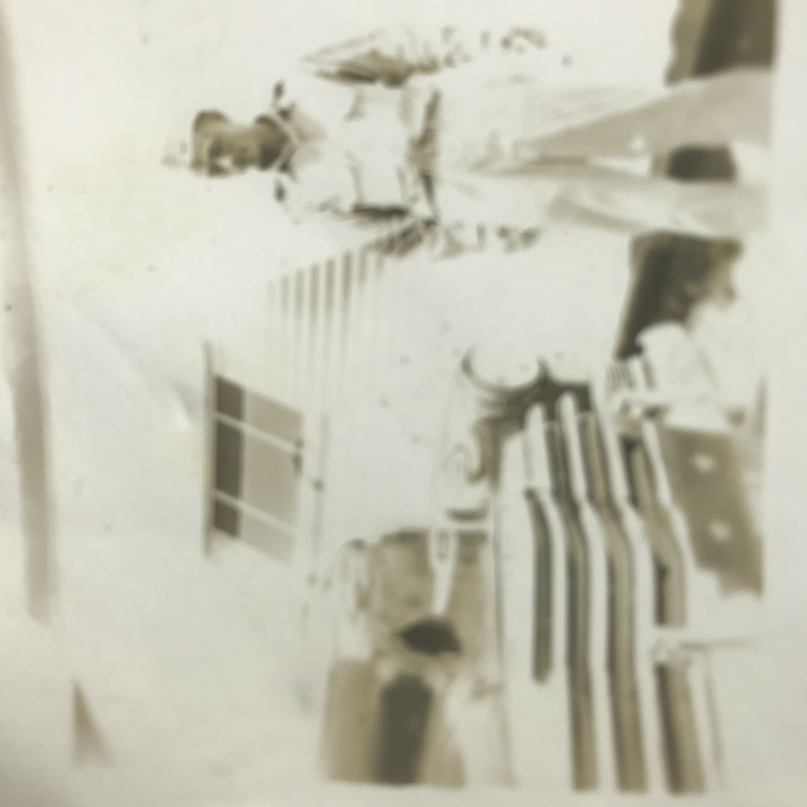
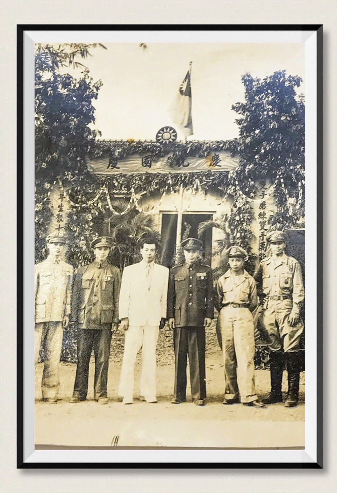

怒海救人
以下摘錄自 “特高憲兵 – 陳中堅回憶錄：附述對海峽兩岸統一福祉期望” 第十章：獻身情報 pp 387-390
民國四十六年,我分發至・憲兵直屬調査第一組的「高公館。」位於台北市大龍峒重慶北路三段 二三巷十號,一棟不起眼的平房中。 中校組長王才金先生,曾是一位在太平洋中「怒海救人」的了不起英雄人物。
民國三十四年,同盟國於日本本土投下原子彈,日本以無條件投降戰敗。同盟國由美國五星上將 麥克阿瑟元帥受降,估領東京。我國是同盟國戰勝國之一。也有權去估領東京。但我國勝利后,要接
收淪陷區甚為潦闊,又與中共在紛争,無法派遣軍隊去估領日本。僅象征性的,由國民政府軍事委員 會派遣何世禮將軍率領一個「中華民國駐日軍事代表團」與由憲兵司令部派陳毓亮少校率領武裝憲兵
一隊前往日本,估領東京。 那時在太平洋的馬里西納群島中的;關島,塞班島。均是第二次世界大戰,美軍攻打日軍登陸戰 的主戰場。美軍登陸勝利後,在這些島上留下大批軍用物資,經美國撥贈我國。由行政院善后安全
署,派兵工前往處理。並由中華民國駐日本東京憲兵隊,派遣憲兵一分隊,由王才金中尉率領前往 「塞班島」成立「中華民國駐塞班島憲兵分隊。」
「塞班島」位於太平洋馬里亞納群島中,僅次於關島的第二大島,當年為日軍太平洋艦隊司令部 所在地,為美軍太平洋登陸戰主戰場。戰爭最激烈,在美軍登陸時,日軍艦隊司令部全體官兵,均集 體跳海自殺,甚為壯烈。
民國七十九年,我次子陳孝祿,在關島大學留學就讀,我數度前往探視。塞班島離關島僅三十分 鐘航程,且為台北至關島,必須停靠之島。而我在塞班島也有一位紅粉知己在那裡,故曾往遊覽。見
島上洋溢熱帶風情,西海岸是綿延亮麗的沙灘,東海岸則全是充滿雄偉壯觀的斷崖絕壁,沿途仍可到 處見到、當年美軍登陸時,殘留的砲彈爆破痕跡。
「塞班島」目前僅有二萬餘人口,但每年到塞班島的觀光客最少有二百萬人以上,觀光業甚為發達。
但在王先生那時駐紮塞班島時,甚為荒涼,亦無航空班機來往,僅有一條小貨輪,每個月來往目 本東京與中國廈門之間。 島上處理美軍遺留物資與軍品的華籍員工有數百人之多。某日,王先生與三十多位華籍員工搭乘
小輪船,欲往中國的廈門港。不意船在航行途中機器失靈,失去動力飄泊於大海中,至船旅客均惶恐萬分。
此時在小輪船右前方正有一艘美國兵艦,船長立即打信號旗與信號燈向美國兵艦求救。但發出了 多次求救信號,美國兵艦毫無反應,可能美國兵艦看不懂中國的信號,船長也焦急萬分。
這時我們這位塞班島憲兵隊長王先生自告奮提出,由他跳入大海游向美國兵艦求救。這是一項常冒険及危險的行動,船長與全船旅客,並不贊同。但王先生力陳,為了全船旅客安危。他義無反顧。他立即脫下全身衣服,僅著一條短褲,帶了一件救生衣二個救生圈跳人海中,他奮力向美國兵艦方向游去，他在大海中搏了三個多小時,竟幸運被美國兵艦發現,設法把他救上了
王先生立即向美國兵艦長說明,他原乘的小輪船,失去動力即將沉沒,央求美國兵艦前往搭救。
美國兵艦同意了王先生的央求,前往小輪船處,將全船的旅客與船員就上兵艦。 這時至船旅客,莫不感激主先生救命之恩,紛將身上的金錢,有的並把手錶取下,全部要贈送給
王先生,但他一件都不收。並說:他身為憲兵,這次跳入海中向美國兵艦求救,是他應該做的,算不了什麽。
美國兵艦這時同意,改航駛往度門,把營救在兵艦上的旅客與船員送達目的地。並先拍出電報告 知厦門港務局。廈門港務局,接到電報,即著手准備迎接這批怒海餘生歸來的旅客,並把王先生的經
過發饰了新聞。故美國兵艦尚未到達廈門,王先生英勇事蹟,已為厦門報刊電台廣為傳播,已經哄動全廈門。王先生已經為家喻戶曉的英雄人物。

